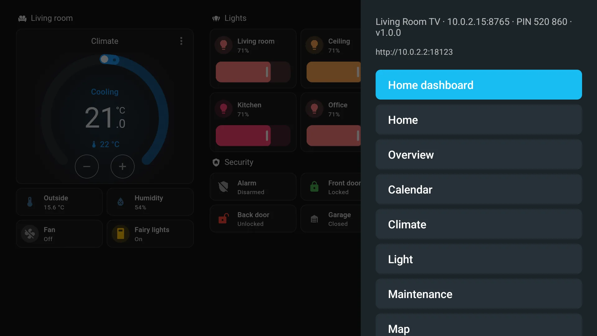
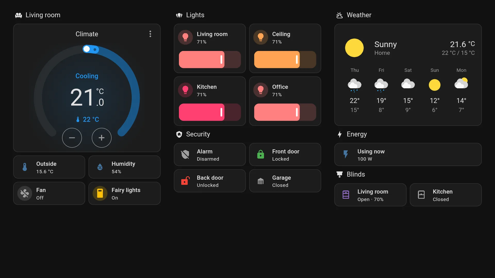
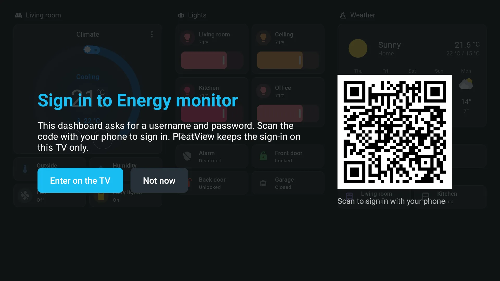
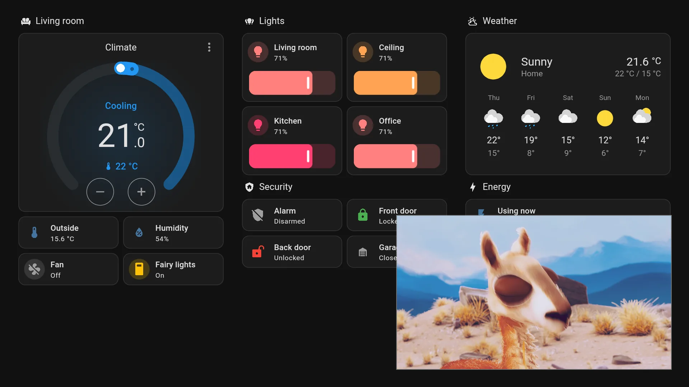
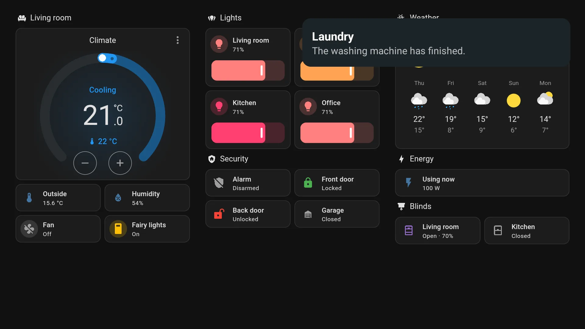
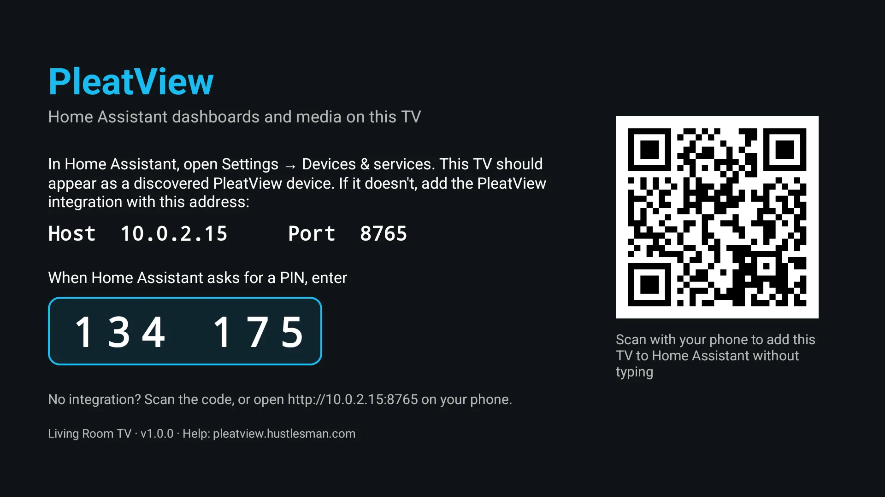

Dashboards that stay up
Any dashboard, full screen, for weeks on end. PleatView signs in by itself, rotates between dashboards, and recovers from Wi‑Fi drops, Home Assistant restarts and browser crashes.

PleatView turns a Google TV, Android TV or Fire TV into a display for your home. Your dashboards stay on screen around the clock, and Home Assistant can put cameras, video and notifications on top.
Made by HustlesmanMIT licensedHome Assistant 2025.1 to 2026.11

The TV joins Home Assistant as a media player and a notifier, ready for your automations.
Any dashboard, full screen, for weeks on end. PleatView signs in by itself, rotates between dashboards, and recovers from Wi‑Fi drops, Home Assistant restarts and browser crashes.

A Grafana, NAS or router page asks for a password? The TV shows a code. Scan it, sign in on your phone with your password manager, and the TV remembers it, encrypted on the TV only.

Cast from Home Assistant's media browser, full screen or picture-in-picture. Pop up a camera when the doorbell rings.

notify.send_message puts a card on screen over whatever is on, with a picture or a camera snapshot if you like.

Add a Webpage dashboard in Home Assistant, for Grafana, UniFi or OpenSearch. The TV opens the site itself and zooms it to fit, so sites that refuse frames still work.
tts.speak plays over whatever is on and turns it down meanwhile, so "the front door is open" interrupts the film, not the other way round.
Channel up and down switch dashboards, Back closes pop-ups, and the menu needs no keyboard. Setup ends at a six-digit PIN.
No computer needed. It takes about five minutes.
On the TV, install the free Downloader app from its app store, open it and enter this address. Android asks once to allow the install.
On Home Assistant 2026.11 and later it comes from the built-in Marketplace, on older versions from HACS. Install it, then restart Home Assistant.
Open PleatView on the TV. Home Assistant finds it under Settings → Devices & services: choose Add and type the PIN from the screen.

The TV shows its PIN and a QR code. The code opens the TV's own page on your phone, which adds it to Home Assistant without typing.
Using the Marketplace? Until PleatView is in its catalogue, Home Assistant asks you to connect a GitHub account once before it adds PleatView from GitHub.
Each release runs an automated test on a TV against a real Home Assistant. It covers pairing, dashboards, kiosk mode, notifications, video, cameras, Webpage dashboards, sign-ins, standby, restarts and updates.
| Device | Result |
|---|---|
| Google TV, Android TV 16Emulator, every release | All 13 checks pass |
| Fire TV Stick, 3rd generationFire OS 7.7 (Android 9). Pictures in notifications don't animate before Android 10. | All checks passSoak test running |
| Chromecast with Google TV (HD) | TestingFrom 30 October |
| Google TV Streamer | Planned |
| Samsung (Tizen), LG (webOS)As a web app | On the roadmap |
| Version | Result |
|---|---|
| 2026.11 beta | 13 of 13 |
| 2026.10Current release | 13 of 13 |
| 2026.11 nightly | 13 of 13 |
| 2025.1Oldest supported | 13 of 13 |
Last run on 29 October 2026. The full list of checks is in the test plan.
The app and the integration are on GitHub under the MIT license. GitHub Actions builds, signs and attests each release from its tagged code, so anyone can check where an APK came from.
No cloud service, no account and no tracking. The TV talks to your Home Assistant on your network, and to other sites only when your dashboards show them.
Passwords for web dashboards are encrypted with the TV's keystore, offered only to their own site, and never sent to Home Assistant. Read the privacy policy.
PleatView is free, and every feature stays free for everyone. If it's useful to you, chip in towards test devices and app-store fees. Bug reports and ideas help just as much. Donations go through Stripe and show as Hustlesman on your statement.